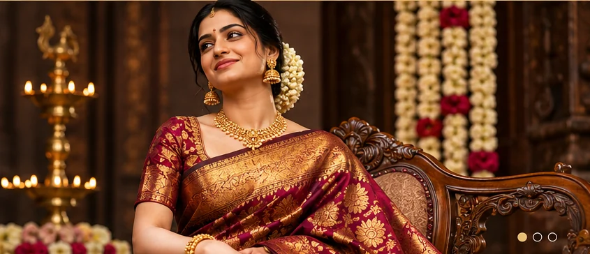
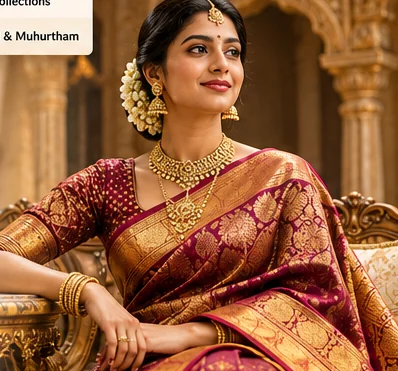

01 /
Fabric comes first.
We invite you to explore how texture, weight and movement shape the mood of a drape.
Discover a considered collection of exquisite sarees—from festive silks to comfortable everyday classics—curated for moments worth remembering.

Explore a spectrum of fabrics, colours and occasions—each with its own point of view.
Explore a few styles from our demonstration catalogue, with details for every saree.

From the first colour you consider to the drape you choose for the ceremony, the most memorable bridal looks feel deeply personal.
The joy of saree shopping lives in colour, proportion, fabric and the way an outfit feels.
We invite you to explore how texture, weight and movement shape the mood of a drape.
From quiet neutrals to ceremonial jewel tones, every shade sets a different scene.
Whether it is a celebration or an ordinary day, your saree should feel like your own.
Find ideas for the celebrations, traditions and everyday moments on your calendar.
Explore fabric details, bridal inspiration and thoughtful tips for your saree wardrobe.
Browse the collection, or share your preferences for a showroom visit enquiry.